Katie's Wedding Update
Katie’s back on The Wedding Police, and Penny and Jim are once again trying to bring order to wedding-planning chaos!…

Janet's Planet! Astrology at the Altar
🔮 Mercury’s in Retrograde… and So Is the Wedding! 💍😂 This week on The Wedding Police, Penny and Jim welcome Janet, who…

Rehearsal Dinner: Veils, Tales and Cocktails
🍷🚨 The Wedding Police: Rehearsal Dinner Rules & Family Feuds! 🚨🍷 Who pays for the rehearsal dinner? Where should it…

Wedding Guest Plus One or None?
PLUS-ONE PANDEMONIUM: Because Apparently Everyone Needs a Date This week on The Wedding Police, Penny and Jim tackle…

Keeping Up with Katie
Katie, an avid Wedding Police listener from Alabama, jumps on a Zoom call with Penny and Jim looking for help planning…

Gown Gossip with Dave Gaffke!
🚨 The Wedding Police are bringing in an expert witness! 🚨 This week, Penny & Jim welcome David Gaffke, owner of…
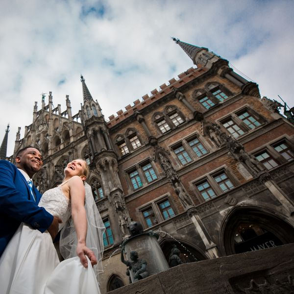
Penny Goes to Germany
🇩🇪💍 Penny went all the way to Germany for a wedding—and of course, Jim has QUESTIONS! This week on The Wedding Police…
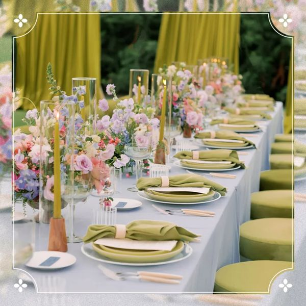
Color Drenching & More! 2027 Wedding Trends
Episode 32 - Color Drenching & More! 2027 Wedding Trends

1996 vs 2026 Weddings
1996 vs. 2026: Wedding Edition! 💍📱😂 This week on the Wedding Police Podcast, Penny & Jim take a hilarious trip down…
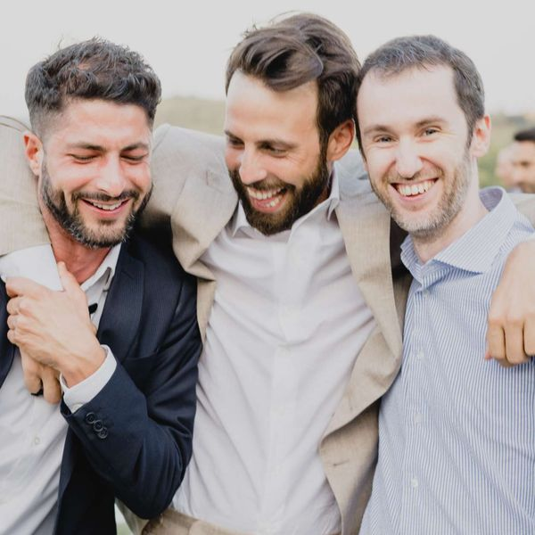
Bachelor Parties
This week, Penny and Jim put bachelor parties on trial! 👮♂️🍻 Are they really like the movies and TV make them look—or…

Bachelorette Party or Financial Crime Scene?
Penny and Jim are putting bachelorette parties on trial! 💍🍾 From Nashville to Vegas and everywhere in between, they’re…

Over the Top Wedding Intros
This week, Penny and Jim are asking the question nobody at the rehearsal dinner is brave enough to ask: When did the…

Wedding Food
This week, Penny & Jim are serving up a full plate of wedding food talk! From carving stations and signature cocktails…

Alterations
In this episode of Wedding Police, Officers Penny and Jim put on the white gloves, dust for receipts, and investigate…

Hot Hot Hot: Keeping Guests Cool at a Summer Wedding
This week on Wedding Police, Penny and Jim are on heatwave patrol! If your wedding day forecast is "hot enough to fry…

JusT&T: The Taylor & Travis Wedding Post-Game
On this week's podcast, the confetti has settled, the cake has been sliced, and we're still reviewing the game film.…

Taylor & Travis Pre Game Rundown
In this fun-filled episode of The Wedding Police Podcast, Penny & Jim put on their imaginary wedding planner badges…
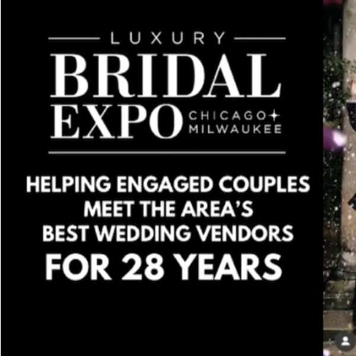
Going to a Bridal Expo!
This week on The Wedding Police, Penny and Jim hit the aisles of the bustling bridal expo with special guest Bill…

Destination Weddings
This week on The Wedding Police, Penny and Jim investigate the wild world of destination weddings. Are they romantic…
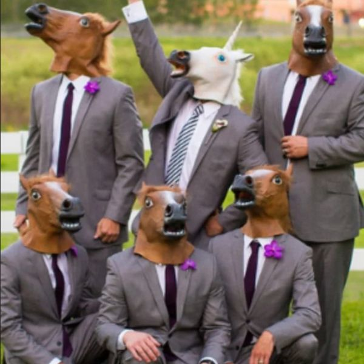
Wedding Theme vs Theme Wedding
This week on Wedding Police, Penny and Jim investigate the wild world of wedding themes. From fairytale castles and…

The DJ!
In this episode of The Wedding Police Podcast, Penny and Jim are joined by special guest and sponsor Ryan Gorey from…

Wedding Cake Toppers
🚨🎂 Episode 18 of The Wedding Police Podcast is serving up a sweet dose of wedding cake controversy! Penny and Jim take…

Wedding Cakes
🚨🎂 This week on The Wedding Police, Penny and Jim are taking on one of the sweetest — and most stressful — parts of…

Decoding Wedding Dress Codes
🚨💍 This week on The Wedding Police, Penny and Jim are laying down the law on wedding dress codes! From black tie…

Pets at Weddings
This week, Penny and Jim investigate the furry frontier of modern weddings in this hilarious episode of The Wedding…

Kids at Weddings
This episode of Wedding Police, Penny and Jim tackle the age-old question: should kids be invited to weddings, or…

Gameify Your Wedding
In this episode of The Wedding Police, Penny and Jim tackle one of the most debated reception topics: games at your…

Dry Weddings
On this episode of Wedding Police, Penny and Jim answer a call from James, a 22-year-old recent grad who’s discovering…
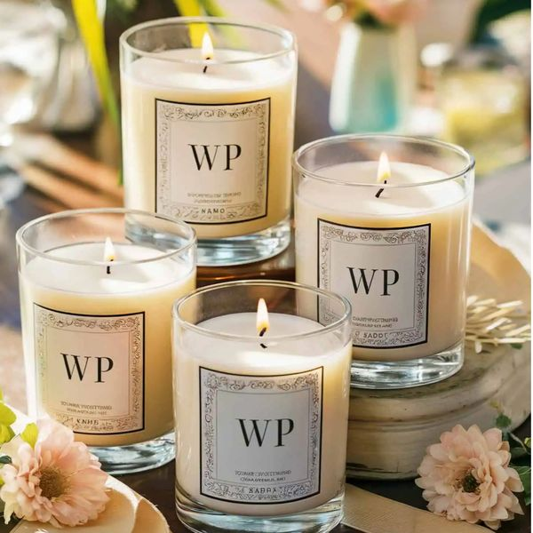
Wedding Favors
Episode 11 of Wedding Police finds Penny and Jim diving into the often-debated world of wedding favors. From…

'Dark Mary' Calls the Wedding Police
Episode 10 of The Wedding Police is a milestone celebration that quickly spirals into chaos. Penny and Jim kick things…
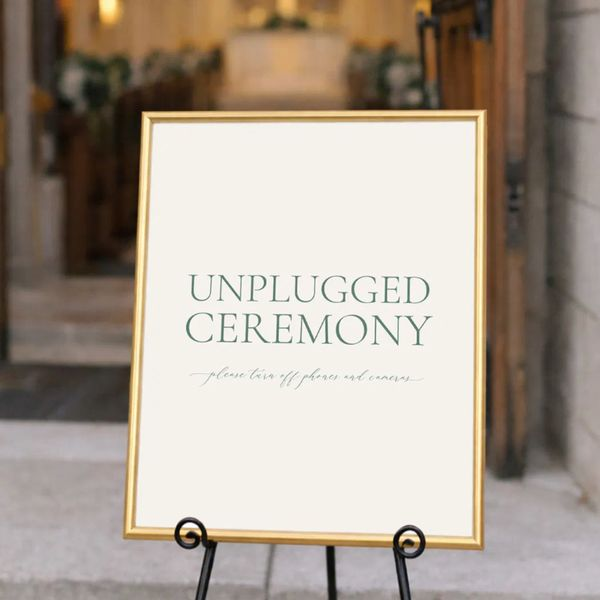
Unplugged Weddings
n this lightly chaotic episode, The Wedding Police tackle the mysterious phenomenon of people being told to do one…

Wedding Toasts
In this episode of The Wedding Police, Penny and Jim put AI to the test by attempting to generate the perfect wedding…

Bonus: The Oscars!
In this BONUS episode of The Wedding Police, Penny and Jim dive into the Oscars with equal parts style critique and…

Wedding Speeches
Every wedding has that moment: the mic comes out, the room goes quiet, and suddenly someone’s cousin thinks they’re…
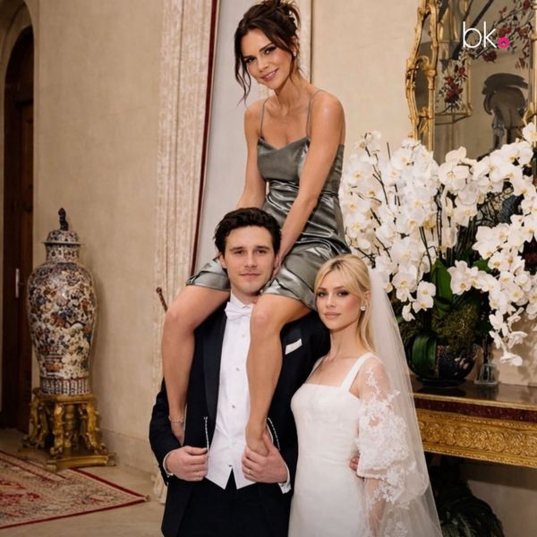
Messy Weddings
Episode Recap: Wedding Police – Chaos Case File In this week’s episode of Wedding Police, the hosts investigate a…
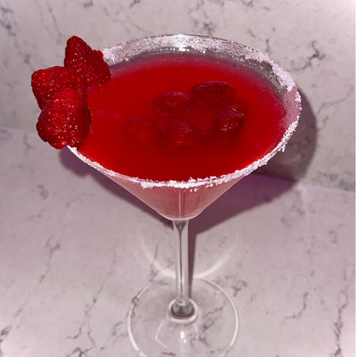
Signature Cocktails
On this episode of The Wedding Police, we’re patrolling the bar — 🚨🍸 Let’s talk about the truth: not every couple…
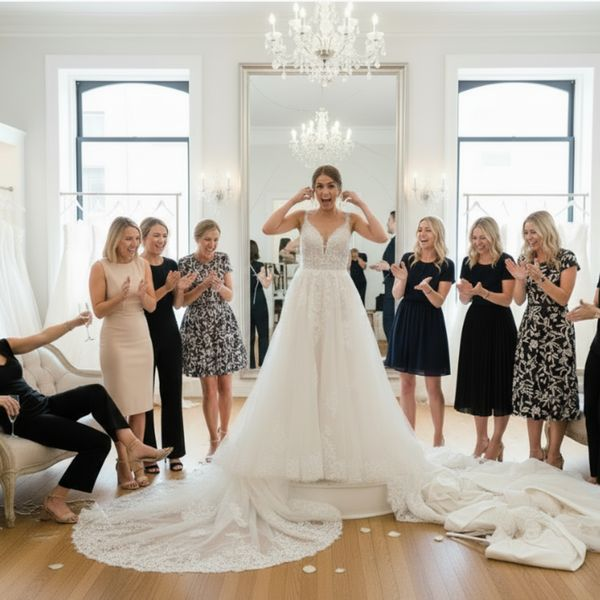
Bridal Gown Shopping
This week Penny & Jim are patrolling the bridal salon — where the mirrors are dramatic and the opinions are louder…

The Dark Side of DIY
In this episode of Wedding Police, Penny and Jim investigate what happens when “We can totally make that ourselves!”…
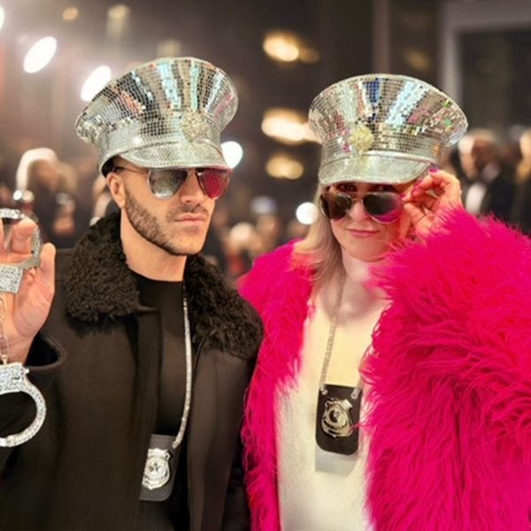
Only the Bride Wears White
Today Penny & Jim engage in a playful discussion about the etiquette breach of wearing white to someone else’s…